CYLINDER HEAD INSPECTION

PROCEDURE
-
INSPECT CYLINDER HEAD SUB-ASSEMBLY FOR WARPAGE
-
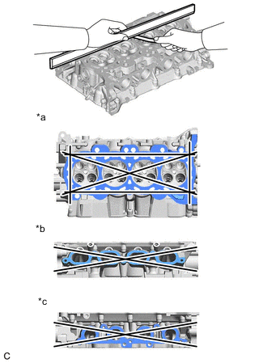
*a Bottom Side *b Intake Manifold Side *c Exhaust Manifold Side Using a precision straightedge and feeler gauge, check the surfaces which contact the cylinder head sub-assembly and manifold for warpage.
Maximum Warpage Item Specified Condition Bottom side 0.05 mm (0.00197 in.) Intake manifold side 0.10 mm (0.00394 in.) Exhaust manifold side 0.10 mm (0.00394 in.) Tech Tips
If the warpage is more than the maximum, replace the cylinder head sub-assembly.
-
-
INSPECT CYLINDER HEAD SUB-ASSEMBLY FOR CRACKS
-
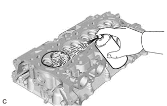
Using a dye penetrant, check the intake ports, exhaust ports and bottom surface of the cylinder head sub-assembly for cracks.
Tech Tips
If cracks are found, replace the cylinder head sub-assembly.
-
-
INSPECT INTAKE VALVE
-
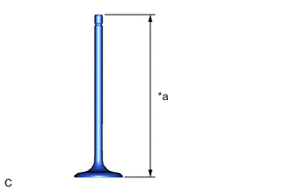
*a Overall Length Using a vernier caliper, measure the overall length of the intake valve.
Standard Overall Length 109.34 mm (4.30 in.) Minimum Overall Length 108.84 mm (4.29 in.) Tech Tips
If the overall length is less than the minimum, replace the intake valve.
-
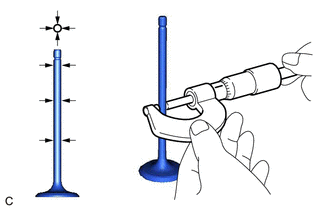
Using a micrometer, measure the diameter of the valve stem.
Standard Valve Stem Diameter 5.470 to 5.485 mm (0.215 to 0.216 in.) Tech Tips
If the valve stem diameter is not as specified, check the intake valve guide bush oil clearance.
-
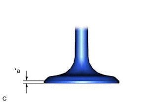
*a Margin Thickness Using a vernier caliper, measure the valve head margin thickness.
Standard Margin Thickness 1.0 mm (0.0394 in.) Minimum Margin Thickness 0.5 mm (0.0197 in.) Tech Tips
If the margin thickness is less than the minimum, replace the intake valve.
-
-
INSPECT EXHAUST VALVE
-
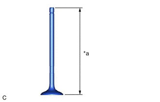
*a Overall Length Using a vernier caliper, measure the overall length of the exhaust valve.
Standard Overall Length 108.25 mm (4.26 in.) Minimum Overall Length 107.75 mm (4.24 in.) Tech Tips
If the overall length is less than the minimum, replace the exhaust valve.
-
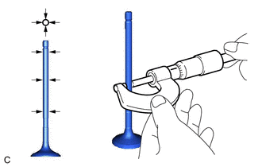
Using a micrometer, measure the diameter of the valve stem.
Standard Valve Stem Diameter 5.465 to 5.480 mm (0.215 to 0.216 in.) Tech Tips
If the valve stem diameter is not as specified, check the exhaust valve guide bush oil clearance.
-
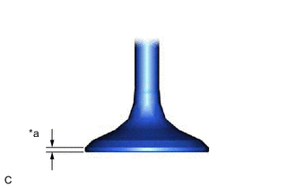
*a Margin Thickness Using a vernier caliper, measure the valve head margin thickness.
Standard Margin Thickness 1.0 mm (0.0394 in.) Minimum Margin Thickness 0.5 mm (0.0197 in.) Tech Tips
If the margin thickness is less than the minimum, replace the exhaust valve.
-
-
INSPECT INNER COMPRESSION SPRING
-
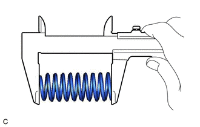
Using a vernier caliper, measure the free length of the inner compression spring.
Standard Free Length 58.52 mm (2.30 in.) or 58.90 mm (2.32 in.) Note
Inner compression springs come in 2 different lengths. Make sure all inner compression springs are the same length when replacing them.
-
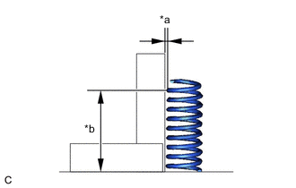
*a Angle *b 40 mm (1.57 in.) Using a steel square, measure the angle of the inner compression spring.
Maximum Angle (Reference) 2° Tech Tips
If the deviation is greater than the maximum, replace the inner compression spring.
-
-
INSPECT VALVE GUIDE BUSH OIL CLEARANCE
-
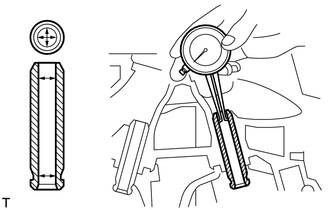
Using a caliper gauge, measure the inside diameter of the valve guide bush.
Standard Valve Guide Bush Inside Diameter 5.510 to 5.530 mm (0.217 to 0.218 in.) -
Subtract the valve stem diameter measurement from the valve guide bush inside diameter measurement.
Standard Oil Clearance Item Specified Condition Intake 0.025 to 0.060 mm (0.000984 to 0.00236 in.) Exhaust 0.030 to 0.065 mm (0.00118 to 0.00256 in.) Maximum Oil Clearance Item Specified Condition Intake 0.080 mm (0.00315 in.) Exhaust 0.085 mm (0.00335 in.) Tech Tips
-
Oil clearance = Inside diameter - Valve stem diameter
-
If the oil clearance is more than the maximum, replace the valve and valve guide bush.
-
-
-
INSPECT VALVE SEATS
-
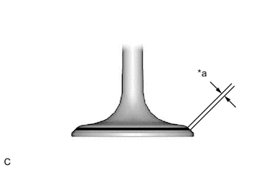
*a Width Apply a light coat of Prussian blue to the valve face.
-
Lightly press the valve face against the valve seat.
Note
Do not rotate the valve while pressing it.
-
Check the valve face and valve seat.
-
If Prussian blue appears 360° around the entire valve face, the valve face is concentric.
Tech Tips
If the valve face is not concentric, replace the valve.
-
If Prussian blue appears 360° around the entire valve seat, the valve seat and valve face are concentric.
-
Measure the width of the contact area of the valve seat and valve face.
Standard Width Item Specified Condition Intake 1.0 to 1.4 mm (0.0394 to 0.0551 in.) Exhaust 1.0 to 1.4 mm (0.0394 to 0.0551 in.)
-
-